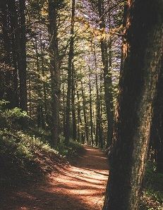

Fish Haven
Weather Summary
Five Day Forecast
Biking trail around Bear Lake
I tug my sleeves down over my wrists and look out at the hardened snow covering what’s meant to be the start of the trail. A weathered wooden sign peaks above the mounds of white: “Limber Pine Nature Trail – Loop 1.2 miles.” I stare down at my sneakers in the snow, then back at my lone car in the parking lot 20 yards away. The final few hours of daylight stream through the trees. Maybe I’ll come back tomorrow?
A sharp wind whistles through the pines, inciting their slender tops to sway across the pale blue sky in an elegant yet eerie dance. The gusts remind me of tomorrow’s forecast: snow flurries and lower temperatures than today. I suppose none of this should be too surprising for the first week of May when you’re 7,800 feet up in northern Utah’s Bear River Range.
My dog has already decided his attitude on the subject — he’s nipping at the compacted snow and appearing fully content as he starts rolling around in it. I zip up my sweater and double check that I grabbed my down jacket from the car — just in case — as I crunch onto the snowdrifts and enter the brisk shade of the forest.
A quarter-mile into the hike, I’m relieved to find that the sunshine and 80-degree temperatures of the previous few days have worked their warmth through the dense forest, exposing a trail of rich earth and fallen pine needles for a spring hiker like myself. The initial section of gentle switchbacks is likewise just enough to warm my frosty fingers and toes.
I stop and take in my surroundings. I’m in a world of green, brown and blue with splashes of white — wispy clouds slinking across the sky and bare aspens shooting up among the firs and pines. It’s all so doubtlessly characteristic of the Uinta-Wasatch-Cache National Forest’s high-altitude terrain. The Limber Pine Trail circles Bear Lake Summit, the highest point of Logan Canyon National Scenic Byway...
Upcoming Events:
Contact Us
Address:
Welly Weather Head Office
Stewart Duff Drive
Rongotai, Wellington
Phone:
+64 4-385 5100
Email:
info@wellyweather.co.nz